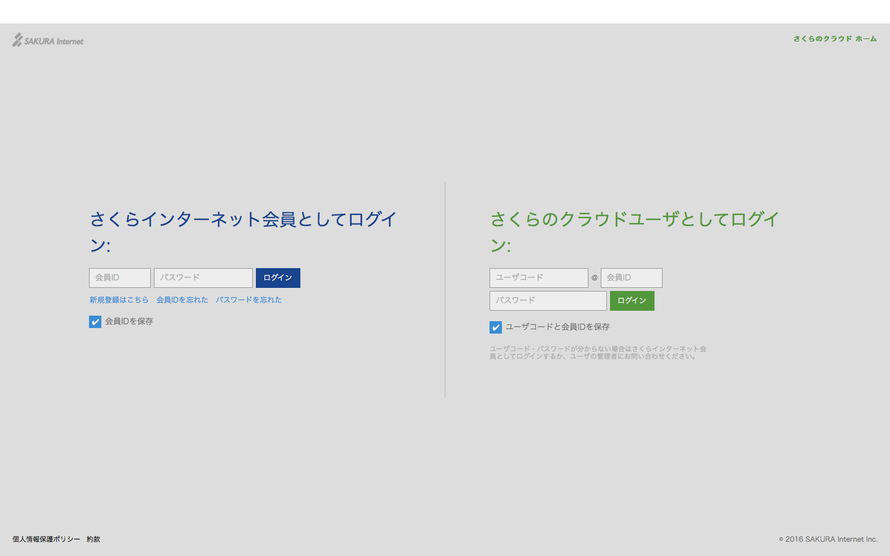
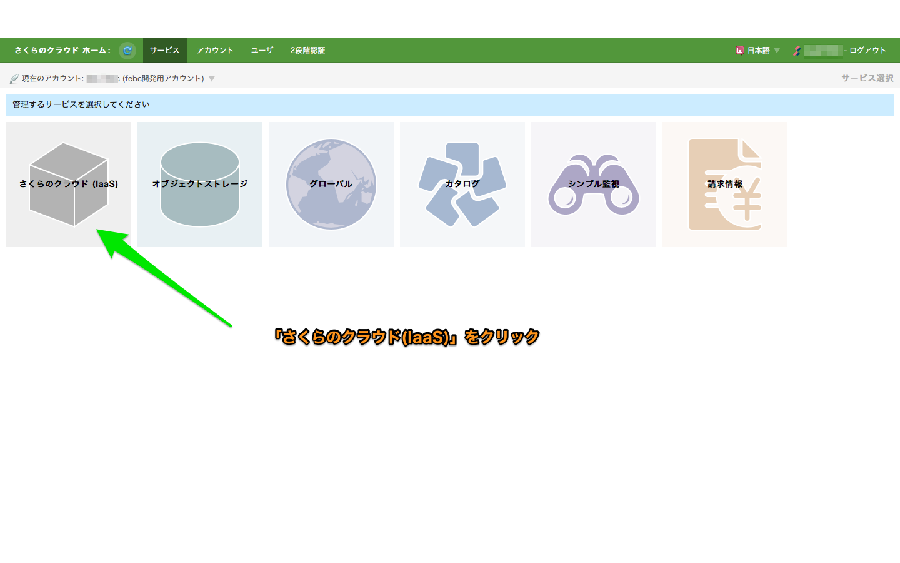
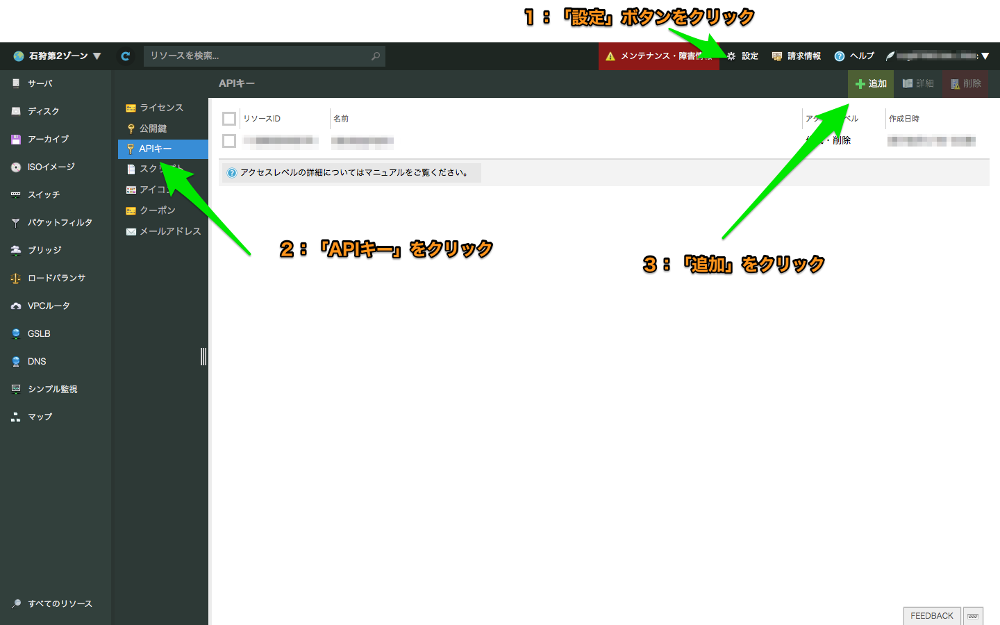
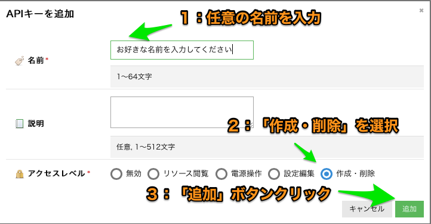
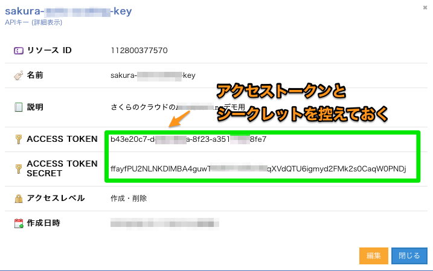

Installation / インストール
Terraformのセットアップ
- 1) こちらの公式サイトからzipファイルをダウンロードします。
- 2) 適当なディレクトリに展開します。
- 3) 2)のディレクトリにパスを通します。
terraformインストール(Macの場合)
展開先ディレクトリは~/terraformとして記載しています。
# ~/terraformディレクトリ作成
$ mkdir -p ~/terraform ; cd ~/terraform
# ダウンロード
$ curl -sL https://releases.hashicorp.com/terraform/0.12.0/terraform_0.12.0_darwin_amd64.zip > terraform.zip
# 展開
$ unzip terraform.zip
# パスを通す
$ export PATH=$PATH:~/terraform/
terraformインストール(Windowsの場合)
ユーザー名をUSERとして記載しています。インストールする環境に応じて適宜読み替えてください。
管理者権限でコマンドプロンプトを起動します。
~/terraformディレクトリ作成
> mkdir c:\User\USER\terraform
> cd c:\User\USER\terraform
ダウンロード
Windows 64bits版をダウンロードし作成したディレクトリに保存します。
展開
対象ファイルを展開します。c:\User\USER\terraform の直下に、terraform.exe を配置します。
# パスを通す
> SETX /M PATH “%PATH%;c:\User\USER\terraform”
※set コマンドで設定出来ているかの確認が出来ます。
動作確認
terraformコマンドを実行してみましょう。
以下のような表示がされればOKです。
terraform動作確認
$ terraform help
Usage: terraform [-version] [-help] <command> [args]
The available commands for execution are listed below.
The most common, useful commands are shown first, followed by
less common or more advanced commands. If you're just getting
started with Terraform, stick with the common commands. For the
other commands, please read the help and docs before usage.
Common commands:
apply Builds or changes infrastructure
console Interactive console for Terraform interpolations
destroy Destroy Terraform-managed infrastructure
env Workspace management
fmt Rewrites config files to canonical format
get Download and install modules for the configuration
graph Create a visual graph of Terraform resources
import Import existing infrastructure into Terraform
init Initialize a Terraform working directory
output Read an output from a state file
plan Generate and show an execution plan
providers Prints a tree of the providers used in the configuration
refresh Update local state file against real resources
show Inspect Terraform state or plan
taint Manually mark a resource for recreation
untaint Manually unmark a resource as tainted
validate Validates the Terraform files
version Prints the Terraform version
workspace Workspace management
All other commands:
0.12upgrade Rewrites pre-0.12 module source code for v0.12
debug Debug output management (experimental)
force-unlock Manually unlock the terraform state
push Obsolete command for Terraform Enterprise legacy (v1)
state Advanced state management
Terraform for さくらのクラウドのセットアップ
- 1) 以下のリンクから、プラットフォームに応じたzipファイルをダウンロードします
- 2)
~/.terraform.d/plugins/配下に展開します- Windowsの場合は
%APPDATA%/terraform.d/plugins/配下に展開します - setコマンドでAPPDATAがどこかを確認出来ます
- プラグインを配置できるディレクトリの詳細についてはTerraformのドキュメントを参照ください
- Windowsの場合は
さくらのクラウドAPIキーの取得
さくらのクラウドのコントロールパネルにログインしAPIキーを発行します。
以下を参考に実施してください。APIキーを発行したら、ACCESS_TOKENとACCESS_TOKEN_SECRETを控えておきましょう。
さくらのクラウド コントロールパネルへのログイン

さくらのクラウド(IaaS)を選択

APIキー発行画面へ移動

APIキーの発行

発行されたAPIキーの確認

さくらのクラウドAPIキーの設定
APIキーは環境変数、またはtfファイルにて設定します。
ここでは環境変数を利用する方法を記載しています。
tfファイルでの設定方法は設定リファレンスのプロバイダ セクションを参照してください。
Mac/Unix系OSなどの場合
# アクセストークン
$ export SAKURACLOUD_ACCESS_TOKEN=[入力]
# アクセスシークレット
$ export SAKURACLOUD_ACCESS_TOKEN_SECRET=[入力]
# デフォルトゾーン(石狩第２を指定)
$ export SAKURACLOUD_ZONE=is1b
※env コマンドで設定出来ているかの確認が出来ます。
Windowsの場合
管理者権限でコマンドプロンプトを起動します。
# アクセストークン
$ setx SAKURACLOUD_ACCESS_TOKEN [入力]
# アクセスシークレット
$ setx SAKURACLOUD_ACCESS_TOKEN_SECRET [入力]
# デフォルトゾーン(石狩第２を指定)
$ setx SAKURACLOUD_ZONE is1b
※設定後、コマンドプロンプトを再起動してください。
※set コマンドで設定出来ているかの確認が出来ます。
(オプション) Dockerでの実行
TerraformとTerraform for さくらのクラウドを同梱したDockerイメージを用意しています。
Terraform for さくらのクラウド Dockerイメージ
以下のように実行します。
Dockerでの実行
$ docker run -it --rm \
-e SAKURACLOUD_ACCESS_TOKEN=[さくらのクラウド APIトークン] \
-e SAKURACLOUD_ACCESS_TOKEN_SECRET=[さくらのクラウド APIシークレット] \
-v $PWD:/workdir \
sacloud/terraform apply
docker-composeでの実行
# あらかじめ以下コマンドで必要な設定ファイルをダウンロード/編集しておく
# curl -LO https://github.com/sacloud/terraform-for-sakuracloud-docker/raw/master/docker-compose.yml
# curl -L https://github.com/sacloud/terraform-for-sakuracloud-docker/raw/master/env-sample > .env
$ docker-compose run --rm terraform apply
(オプション) Homebrew(Linuxbrew)でのインストール
Homebrew(Linuxbrew)をご利用中の場合、以下のコマンドでTerraform for さくらのクラウドをインストール可能です。
brew install sacloud/terraform-provider-sakuracloud/terraform-provider-sakuracloud
注: brewコマンドでのインストール後、プラグインの有効化のために画面の指示に従って~/.terraform.d/plugins配下にシンボリックリンクを作成してください。
# シンボリックリンク作成の例
ln -s /usr/local/opt/terraform-provider-sakuracloud/bin/terraform-provider-sakuracloud_v1.0.5_x4 ~/.terraform.d/plugins/terraform-provider-sakuracloud_v1.0.5_x4